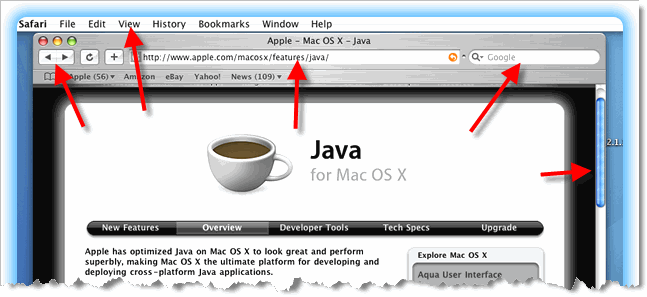

Introducing OOP
Procedural (aka structured) programming works well when applied to linear problems like processing the monthly payroll or sending out a set of utility bills. You feed a list of employees and their hours into one end of a program and get a pile of paychecks out the other. You organize your programs as assembly lines which processes data. This works very well.
But how do you apply the assembly line model to your Web browser? Where is the beginning? Where's the end?

When it comes to interactive software, a better method of organization is needed, and that's where OOP (Object-Oriented P rogramming) comes in. In an object-oriented program, the basic "building-block" is not the function, but the object. OOP programs look more like communities than assembly lines. Each object has its own attributes and behavior, and your program "runs" as the objects interact with one another.
 This course content is offered under a
CC
Attribution Non-Commercial license. Content in this course
can be considered under this license unless otherwise noted.
This course content is offered under a
CC
Attribution Non-Commercial license. Content in this course
can be considered under this license unless otherwise noted.